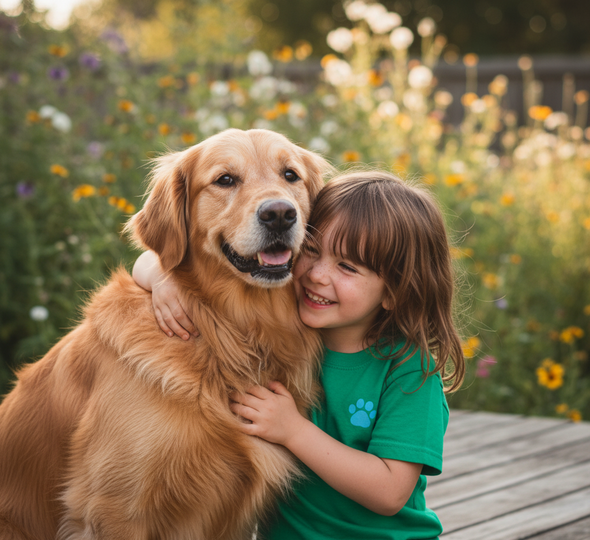

Projeto Pata Solidária
Boas-vindas à Pata Solidária! Nós transformamos o abandono em recomeço. Lutamos diariamente para dar uma segunda chance a animais em situação de risco, oferecendo cuidado, dignidade e a esperança de encontrar um novo lar. Junte-se a nós nesta causa.
Transforme uma vida: Adote!
Entre em contato para adotar um amigo peludo hoje mesmo!
Contato para adoção: (21) 90099-9999 | Email: patasolidaria@org.com